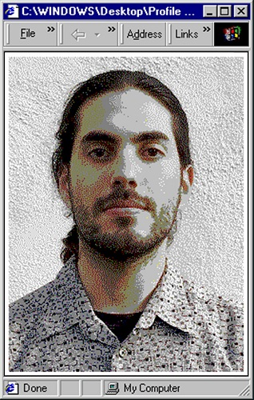

About Me

Hello denizens of the world wide web! Welcome to my website. My name is Erik Contreras. That photo is a picture of me! (^_^). I am a 2nd year Design graduate student at the University of California, Davis. Please use the links found on the home page to see the cool projects that I have been working on. I am currently taking DES 117 this Fall to learn about HTML and CSS. Come by every week to check for cool new updates. On my free time, I like top scour GeoCities for neat gifs. More content to come!!!
Please contact me via email if you want to say hi, or if you want to request my resume.